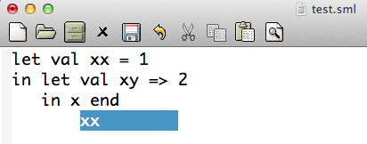

Identifier completion for incomplete program text
based on Yacc error recovery
This page provides an implementation of identifier completion for a
small subset of Standard ML as an Emacs-mode based on the approach
presented in the following paper:
How to use
Download
mode.tar.gz,
unzip and untar it, and then follow the instructions in README file.
A bug was fixed on Jan 6, 2015.
Another bug was fixed on Feb 16, 2015.
Screen shot

An example of using yyerrok;
As for the discussion in Section 4.5 in the paper above,
add the special statement yyerrok; in the action description
in the case of LET dec IN exp error in the file "sml.y" as follows.
| LET dec IN exp error
{
yyerrok;
$$ = make_atexp4 ($2, $4);
}
This enables the completion on the example
in Section 4.5.